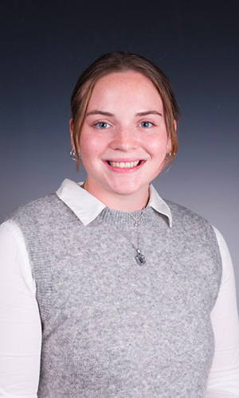

It's nice to meet you!
I'm Lauren Coop, a junior Data Analytics & Policy Studies major at Syracuse University.
I am passionate about using data analytics to drive strategic decisions and innovation within various fields. I'm looking forward to applying my analytical and technical skillset as a Small Business Sales Business Analytics Intern for T-Mobile this summer.
I have been an athlete all my life and am a Division I Rower here at Syracuse. Through athletics, I have been selected to be the Co-President of SAAC, the Student-Athlete Advisory Committee.
In my free time, I love to hike, snowboard, and read. Please feel free to look through my website to learn more about me!